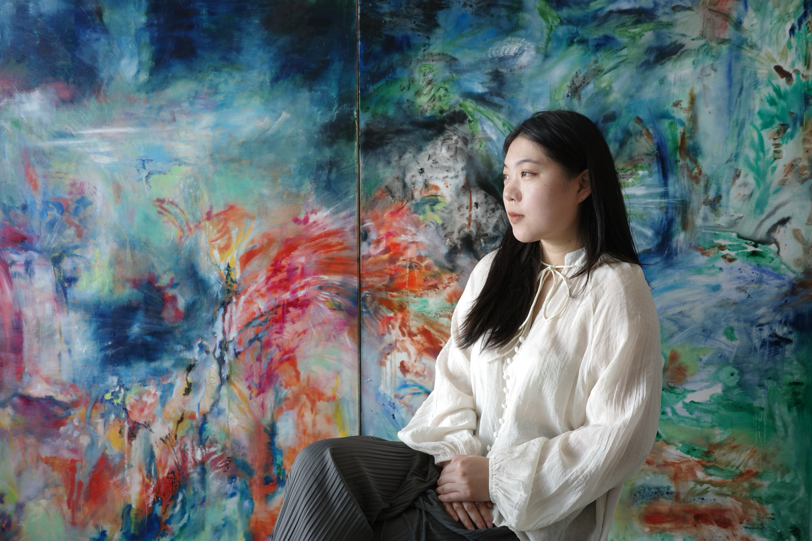

Biography
Junhan Shen (b. 2000, China) is a New York-based visual artist working across painting and drawing. Shen holds an MA in Art and Art Education from Columbia University, and a BFA with Honors in Illustration from the School of Visual Arts. Her work has been exhibited in New York, Melbourne, and Beijing. She has also worked in museum education at the Museum of Modern Art and the Jewish Museum. Her experiences of moving between different places, languages, and cultural contexts inform her practice.
